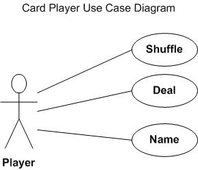
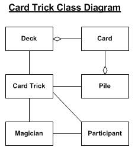
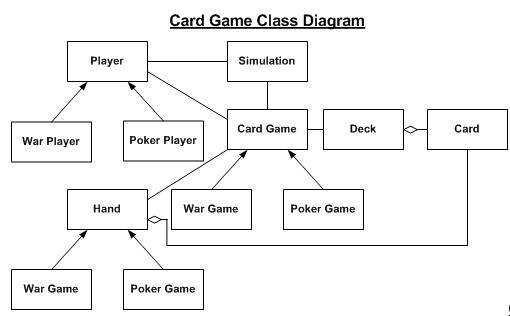
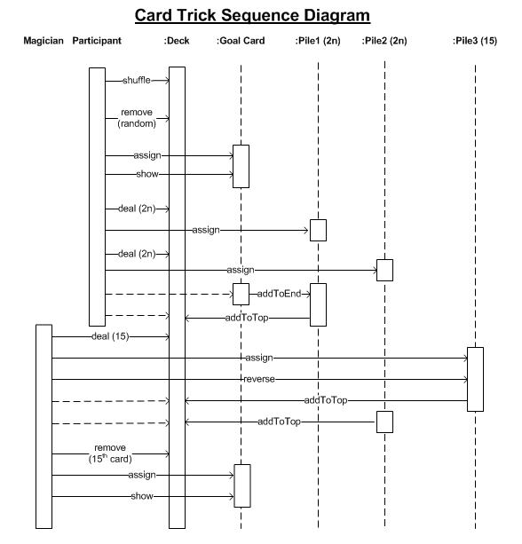

Penn State Great Valley - DSL Course - Lecture 6
The Semantic Model and Symbol Table
The term Semantic Model is
used over and over and over again in the book and throughout CS.
It seems to be one of those overloaded terms which is used
constantly but never really well defined at least well enough so
students feel they have a strong grasp of the term in it's various
contexts. So let's get it straight and tear it apart!
Definition of 'semantic' - is the study of meaning. It is the
study of the relationship between signifiers,
such as words, phrases, symbols and signs, and what they stand
for, their denotata.
Definition of 'model':
- a standard or example for imitation or comparison.
- a representation, generally in miniature, to show the
construction or appearance of something.
- an image in clay, wax, or the like, to be reproduced in more
durable material.
- etc, etc, etc....
According to Eric Evans,
author of Domain Driven Design, the semantic model is the model of the
domain where you can apply all the principles that DDD espouses.
The linguistic abstraction is a thin veneer on top of the
underlying model. The more well abstracted your model is, the
easier the construction of the layer on top of it will be.
You must realize that the term 'semantic model'
can represent the abstract form Evan associates with the domain you are
trying to model and the concrete representation that Fowler often works
in when describing the development of DSLs. We will look at it
from Martin Fowler's perspective but we may move between the abstract
and the concrete during the discussion.
In the context of a DSL,
a semantic model is a representation, such as an in-memory object
model, of the same subject that the DSL describes. The semantic
model acts as a repository for the next action that you execute.
If the DSL describes a state machine, then the Semantic Model
might be an object model with classes for state, event, etc. The
Semantic Model is the library or framework that the DSL populates.
A
semantic model is a notion very similar to that of a Domain Model.
A Domain Model captures the core behavior of an application,
while a Semantic Model may play a supporting role. A good example
of this is an object-relational mapper that coordinates data between an
object model and a relational database. You could use a DSL to
describe object-relational mappings, and the resulting Semantic Model
would consist of the Data Mappers, not the Domain Model that is the
subject of the mapping.
A Semantic Model is usually different
from a Abstract Syntax Tree (AST) because they server separate
purposes. A syntax tree corresponds to the structure of the DSL
scripts. Although an AST may simplify and somewhat reorganize the
input data, it still takes fundamentally the same form. The
Semantic Model, however, is based on what will be done with the
information from a DSL script. It often will be substantially
different structure, and usually not a tree structure. There are
occasions when an AST is an effective Semantic Model for a DSL, but
these are the exception rather than the rule.
The Semantic Model can
often precede the DSL. This happens when you decide that a
portion of the Domain Model might be better populated from a DSL than
from a regular command-query interface. Alternatively, you can
build a DSL and Semantic Model together using the discussions with
Domain experts both to refine the expressions of the DSL and the
structure of the the Domain Model.
The Semantic Model can either
hold the code to execute itself (interpreter style), or be the basis
for code generation (compiler style). Even if you are using code
generation, it's useful to provide interpretation to help with testing
and debugging.
So let's build an Semantic Model for the fun of it...
Tips on Building Models
- Understand
the business completely. In my view this is the best part of our
job. I've working in manufacturing, insurance, finance, banking,
medical devices, medical records, pharmaceuticals, retail and
others.
- Use good names for all your classes. If you
can't explain an object to someone then it's probably not right.
That's OK, get it right on the next iteration. Names should
be consistent and some stupid overloaded computer term, it should be
something the business understands implicitly. The name should be
exact in that it defines the responsibilities of the entity in the
model.
- Use metaphors to model abstract operations/entities to
help simplify the design of the model. For example, "Sticky Note"
is a comment that hangs on to some entity as it travels through the
order process flow.
- Make the model self-contained. It
should contain the raw logic of the application. Any additional
logic should be contained in some layers, as for instance the
work-flow, dependency injection, persistence....
- The model
should be independent. The model shouldn't change because the
underlying persistence implementation or the UI or any other
layer changes.
- The model should be technically simple.
It should only contain POJOs. The responsibilities assigned
to an entity in the model should be limited to only those necessary for
the software domain.
- Keep the model up to date.
- Make
sure the software model matches the business model. The software
domain should be easy to understand for the business model expert and
it
shouldn't have any discrepancy.
- Care
for the code quality of you model because it is the foundation of your
application. If it is bad the whole thing can fall apart, plus
changes are inevitable to your model so it has to be adaptable.
- Test your model independently and involve your customer in
testing.
Card Game Semantic Model
Although
not as famous as its logical or physical data model cousins, the
semantic model deserves generally greater consideration because of its
unyielding focus on the user perspective. When built correctly, the
semantic model is the user's perspective of the data-and what could be
more important?
In a general sense, semantics is the study of
meanings-of the message behind the words. "Semantic" in the context of
data and applications means "from the user's perspective." It is the
data in context-where the meaning is. "Information" is also often
defined as "data in context." "Semantic" therefore, while not
synonymous with information, carries with it the same sense of data at
work, or data in the worker's hands.
Semantic data elements
are deceptively similar to the entities and attributes we find in a
logical or physical data model. They are things like "customer,"
"product," "credit limit," "net sales," and so forth. What the semantic
modeler must address however, is the context of the term-the data
element- and how it relates to the data elements as present in the
computing systems data stores. For example, is a customer an
individual-the Purchasing Agent- or a company? Must a customer have
actually purchased a product, or can a customer also be someone who is
in the market for a (the) product? What in some contexts might be
called a "prospect" might be called a "customer" in others. Is a
customer a wholesaler or is the end consumer the customer? Is the
wholesaler's customer also called a customer?
The answer to
these questions is likely to be "it depends." And that is the correct
answer, because it does depend. It depends on who is asking and why.
ABC company's sales department may draw a clear line between customers
(buyers) and prospects. ABC's marketing department may simply use
"customer" to refer to those participating in the market, whether or
not they've actually bought ABC's product.
The semantic modeler
must drill down and capture the nuance of each perspective and must
struggle to work with the business users to develop a naming convention
or syntax that provides clarity. All perspectives are represented in
the semantic model.
So in our example let's create a semantic model for working with cards
and card games. Obvious terms include:
- Card
- Suit
- Deck
- Player
- Deal
- Shuffle
Ok,
sounds good, now what? We have to look at the relationships and
actions. For example, suits (Clubs, Diamonds, Hearts, Spades)
pertain to cards. Deck is a collection of cards, while shuffle is
an action taken on a deck.

Data Dictionary:
| Term |
Description |
Type |
| Player |
An external entity that will interact with other players and
the deck of cards. |
Actor |
| Card |
A data item that has value and suit. |
Data |
| Hand |
A collection of cards held by a player. |
Collection |
| Deck |
A collection of cards. |
Collection |
| Shuffle |
A player will manipulate the deck of cards to rearrange the
order of the collection. |
Use Case |
| Deal |
A
player will hand out individual cards to the different players.
The number of cards handed out depends on the game being played. |
Use Case |
| Card Game |
A
collection of players that get together with a deck of cards. A
set of rules governs how a particular card game is played.
These rules control the number of cards dealt, displayed and
strategies players may use to generate a hand with higher value than
the other players. |
Use Case |
Class Diagrams
The classes in class diagrams represent both the main objects and or
interactions in the application and objects to be programmed.
Class diagrams can become more and more detailed but for this we will
keep it course grained. The goal here is to find our objects or
in the terminology we are creating - our nouns.
Card Trick is a simpler model:

Card Game becomes more complex but it still uses some of the nouns from
Card Trick. If it is possible always start small and build
out. If you can use a scaled down version of your system to
express some of the vocabulary - do it. That is a domain language
as well, just a smaller one. Once you get that working then you
can build it to your larger domain.

Sequence Diagram:
Use a sequence diagram to find your verbs. Sequence diagrams are
generally described as the tool to show interactions between objects in
the sequential order that those interactions occur. Developers
typically think that sequence diagrams are meant exclusively for
them. However, an organization's business staff can find sequence
diagrams useful to communicate how the business currently works by
showing how various business objects interact. From this it is
straight forward to see how sequence diagrams will aid in the
definition of a domain specific language.

Now let's look at how all this plays out in our example DSL:
deck.shuffle()
initialCard = deck.removeCard TOP_CARD
initialCard.show()
println()
pile1 = deck.deal 4.cards
pile2 = deck.deal 4.cards
deck.addCards initialCard //adds to end
deck.addCards pile1, ADD_TO_TOP
pile15 = deck.deal 15.cards
pile15Reversed = pile15.reverse true
deck.addCards pile15, ADD_TO_TOP
deck.addCards pile2, ADD_TO_TOP
def finalCard = deck.removeCard 14
finalCard.show()
println()
Symbol Tables
A symbol table is a data type that we use to associate values with
keys. Clients can store (put) an entry into the symbol table by
specifying a key-value pair and then can retrieve (get) the value
corresponding to a particular key from the symbol table. For example, a
university might associate information such as a student's name, home
address, and grades (the value or object - 'student') with that
student's social security number (the key), so that each student's
records can be accessed by specifying a social security number. The
same approach might be used by a scientist to organize data, by a
business to keep track of customer transactions, or by an internet
search engine to associate keywords with web pages.
The essential purpose of a Symbol Table is to map between a symbol used
to refer to an object in a DSL script and the object that symbol refers
to. A mapping like this naturally fits with the notion of a map
data structure, so it's no surprise that the most common implementation
of a Symbol Table is a map with the symbol as a key and the Semantic
Model object as a value.
One question to consider is the kind of object that should be used as
the key in the Symbol Table. For many languages, the most obvious
choice is a string, since the text of the DSL is a string.
Some language like Ruby, Smalltalk and Lisp have a symbol data type
that is specifically designed to used as the key in these tables.
The goal of the key is for lookup and string operation such as
concatenation, substrings, etc are not pertinent. Often you get
two objects that have the same name, for example "pile". If both
of these collection of cards are put into the symbol table as "pile",
how do you find the right object.
For the perspective of a DSL or even a general purpose language a
symbol table is generally used to store information about various
source language constructs. The information is collected by the
analysis phases of the compiler and used by the synthesis phases to
generate the output or target code. For example, during the
lexical analysis, the character string, or lexeme, forming an
identifier is saved in a symbol-table entry. Later phases of the
analysis might add to this entry information such as the type of the
identifier, it usage (e.g., procedure, variable, or label) and
its position in storage. The generation phase would then use the
information to generate the proper output to store and access this
variable.
Many languages have different kinds of objects that need to be referred
to. The introductory state model needs to identify states,
commands, and events. Having multiple kinds of things to refer to
means you have to choose between a single map, multiple maps, or a
special class.
If a single map is used you can't use the same name for different
things - you can't have an event with the same name as a state - which
may be a useful constraint to reduce confusion in the DSL. Fowler
does not recommend this option because a single map makes it harder to
read the processing code because it is less clear what kind of thing is
being manipulated when you refer to the symbol.
With multiple maps, you have a separate map for each kind of object you
are referrring to. For example, a state model may have three maps
for events, commands and states. You can think of this as one
logical symbol table or three symbol tables. You code will be
cleaner because the kind of object you are referring to is in the
processing steps.
Updated 10 March 2012
by D Bartlett.